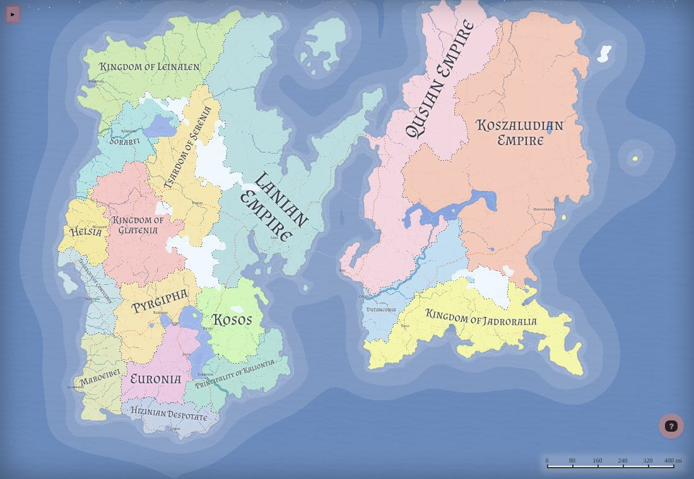
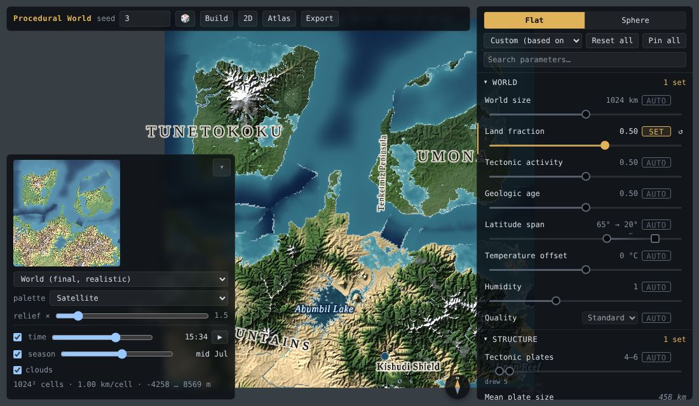
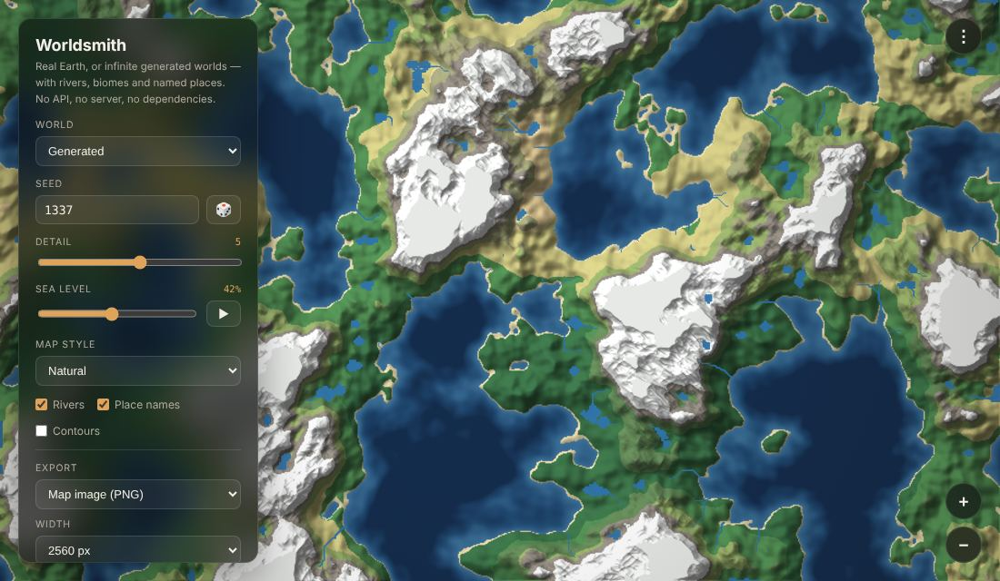
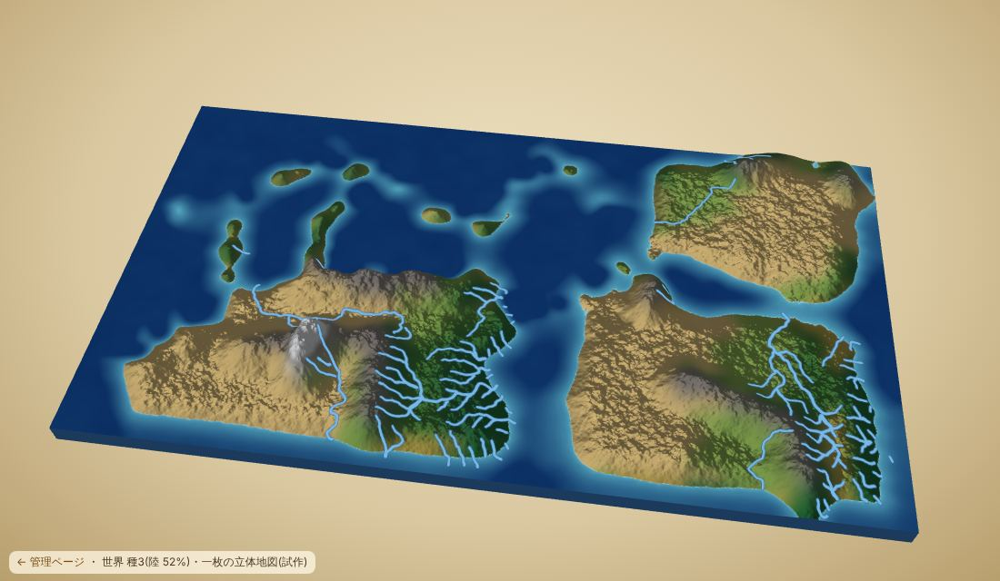

大陸・標高の元を決める4候補の比較(2026-11-17)
概要: Azgaar / procedural-world-generation(以下PWG)/ Worldsmith / 私たちの現アプリ(世界ハニカムの生成器)を、同じ尺度で数えました。結論の見立ては3つです。 ①「陸5割・大陸3つ」を設定として直接指定でき、その通りに出るのはPWGだけ。 ②Worldsmithは陸5割にしても細かい島だらけで、大陸になりません。 ③現アプリは3大陸・陸5割にできましたが、気候が偏りました(砂漠が陸の4割超)。
数え方(4つとも共通)
- 大陸=陸全体の5%以上ある陸地のかたまり。それ未満は島。
- 種(世界の元になる数)を8〜12個変えて生成し、毎回数える。
- 条件はなるべく揃えましたが、地図の大きさ・マスの細かさは各ソフトで違います(下の注記)。
実測の結果
| Azgaar | PWG | Worldsmith | 現アプリ(3大陸版) | |
|---|---|---|---|---|
| 陸の割合 | 型で決まる。「大陸」型34〜40%、「旧世界」型42〜51% | 指定できる。0.5と指定→8世界とも50% | 海面の数字で決まる。初期値だと約68% | 仕様で固定。47〜55% |
| 大陸の数(5%以上) | 1〜3(多くは2)。指定不可 | 3と指定→8世界中7つが3、1つが2 | 陸5割にすると3〜8。ただし下の「島の数」に注意 | 12世界とも3(旧版は5〜7) |
| 島・かけらの数 | 4〜18 | 今回は未集計(島の指標が別形式のため) | 約240〜310に分裂。最大の陸でも陸の10〜21% | 4〜15 |
| 気候(降水・生物群系) | 緯度と風から自動で作る。生物群系の割合は今回未測定 | 気候の段階あり。生物群系20〜23種、最大でも陸の16〜22%で偏りが少ない | 標高とノイズだけの簡易版。大陸の形とは結びつかない | 気候と完全に結びつく。ただし生物群系12種、砂漠が陸の32〜51%(平均44%) |
| 国・国境 | あり(国名まで) | なし | なし | あり(自前の国の仕組み) |
| 1世界を作る時間 | 約5秒(国・街まで込み) | 約4〜6.5秒(標高・気候・川まで) | 約0.9秒(標高のみ) | 約0.02〜0.4秒 |
| 世界の形・広さ | 横長の長方形(約4,400区画、前回計測) | 正方形1,024km、1マス4km。球体モードもあり | 無限(窓を切り取って測定) | 横長60×40マス、約10,285×5,742km |
注:Azgaarは「大陸」型と「旧世界」型の2種で測定。PWGは「地球風」型で、陸50%・大陸3を指定した場合を表の主な数字にしました(指定なしでは陸40%、大陸は1〜3で多くが1)。Worldsmithは2対1の窓を切り取って測定し、「陸5割」は海面を調整した場合です。時間はクラウド上の計算機での目安で、iPhoneでの実測ではありません。
見た目(同じ種=3。ただし各ソフトの表示のまま)
Azgaar(旧世界型):国と国境が出る。海は広く、陸は大きな塊が2つ。

PWG(陸50%・大陸3を指定):地形の質は最も本格的。画面は世界の一部を拡大した状態で、左下の小さい図が世界全体。

Worldsmith(初期設定の例):山の陰影はきれいだが、陸が細かくちぎれて大陸の形にならない。(種を3に指定できておらず、種1337の初期表示です)

現アプリ(3大陸版・一枚絵の立体):大陸は3つに分かれるが、地表は茶色が多く単調。

読み取れること(見立て)
- PWG:陸の割合と大陸の数を直接決められ、気候・川まで本格的に付く。標高の元として最有力。弱点は、横長の世界ではなく正方形が基本であることと、国がないこと。
- 現アプリ:速く、気候と経済の仕組みに最初から結びついている。弱点は、陸を増やすと内陸が乾いて砂漠に偏ること。陸を5割にする場合は気候側の調整が要る。
- Azgaar:国と国境の骨格が揃う。大陸数・陸の割合は型任せで、指定がきかない。
- Worldsmith:軽いが、大陸にならない。標高の元としては不向き(前回の判断を裏づけ)。
確かめられていないこと
- PWGの標高を、現アプリの横長60×40マスに載せる方法(取り込み)は未検証です。
- PWGで作った世界の気候が、現アプリの経済の仕組み(肥沃さ・川・資源)に十分な情報を渡せるかは未検証です。
- Azgaarの生物群系の割合は測れていません。
- iPhoneでの生成時間・メモリは測っていません。